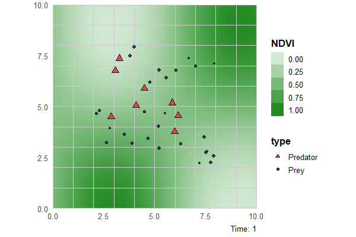
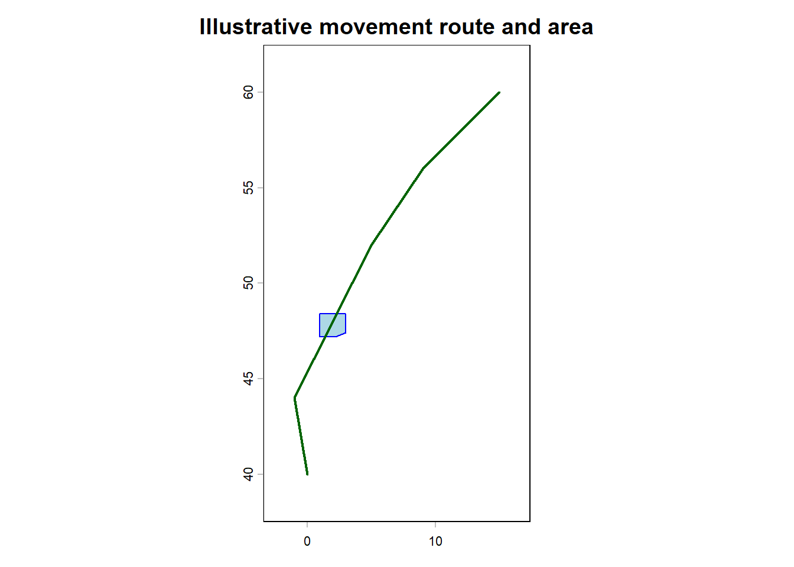
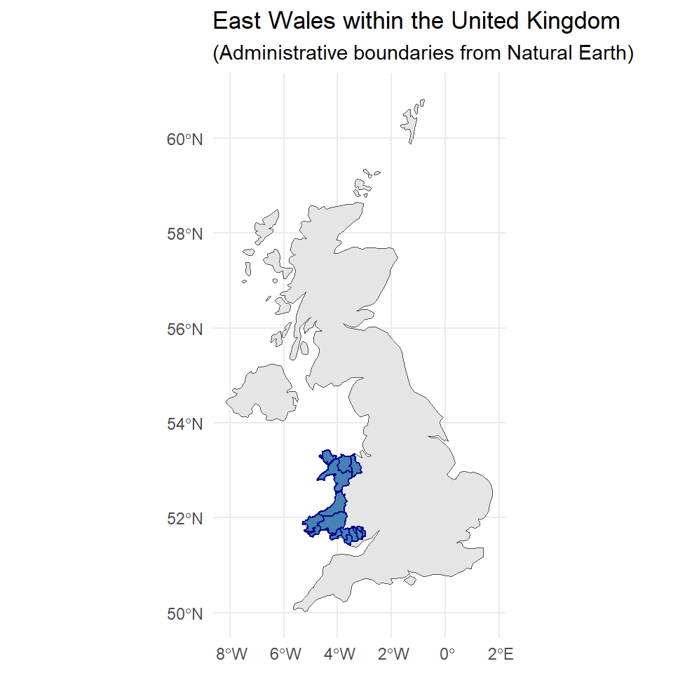
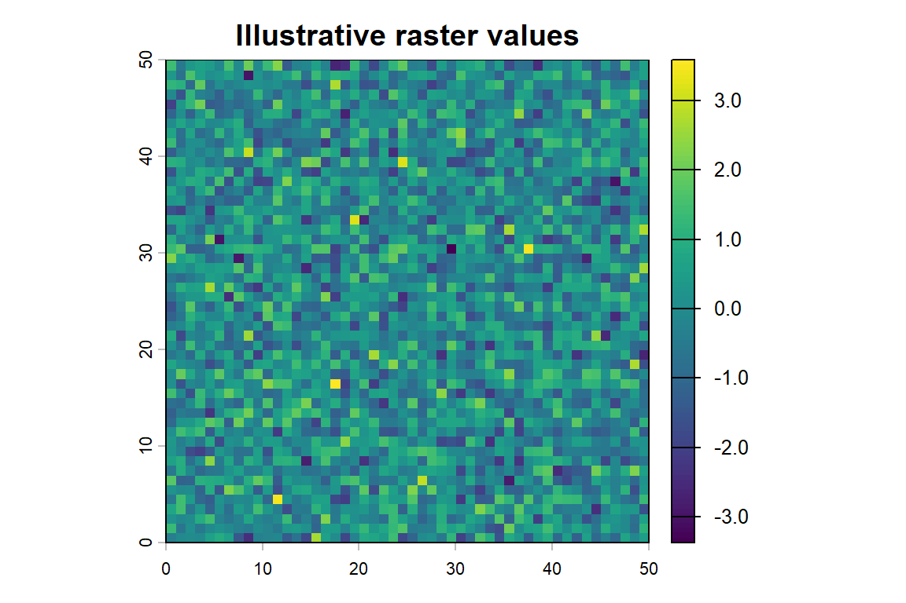
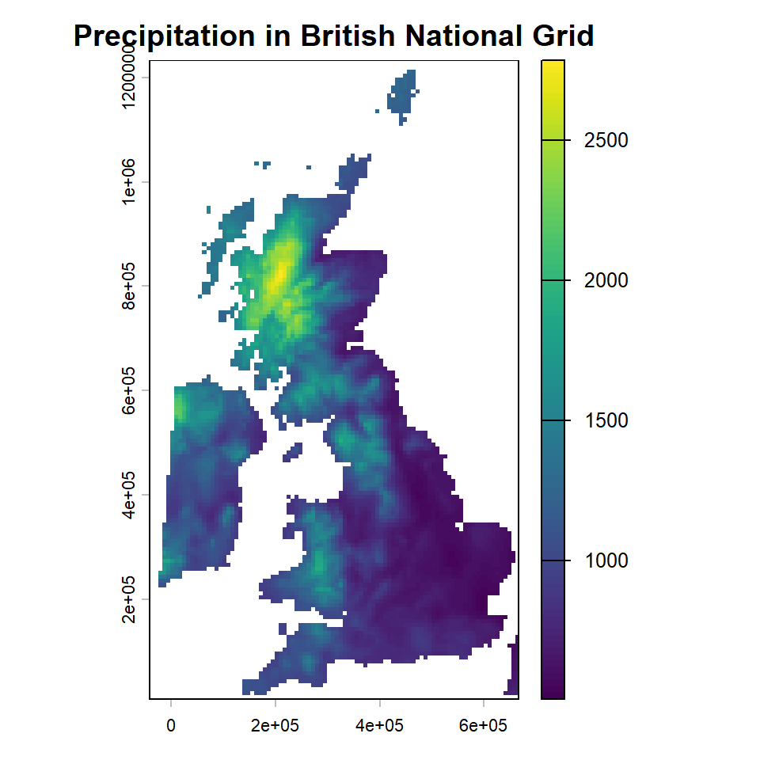
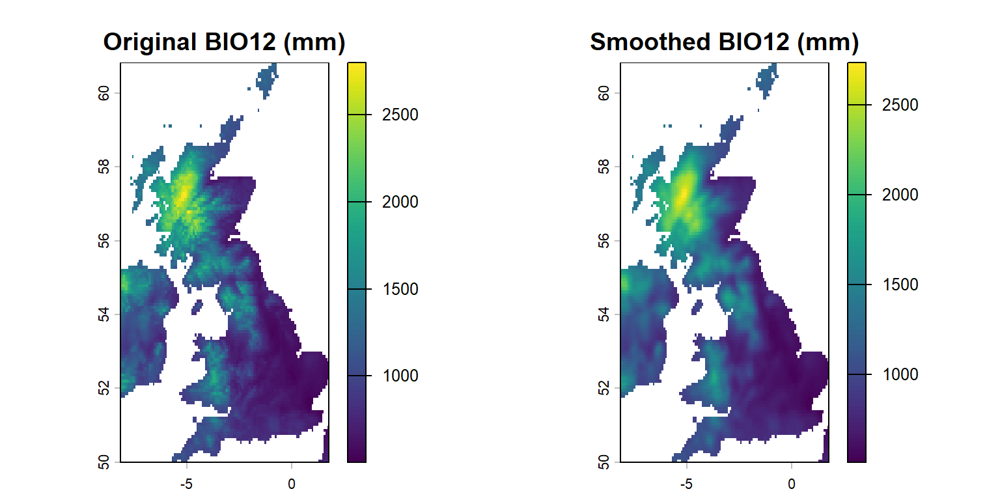
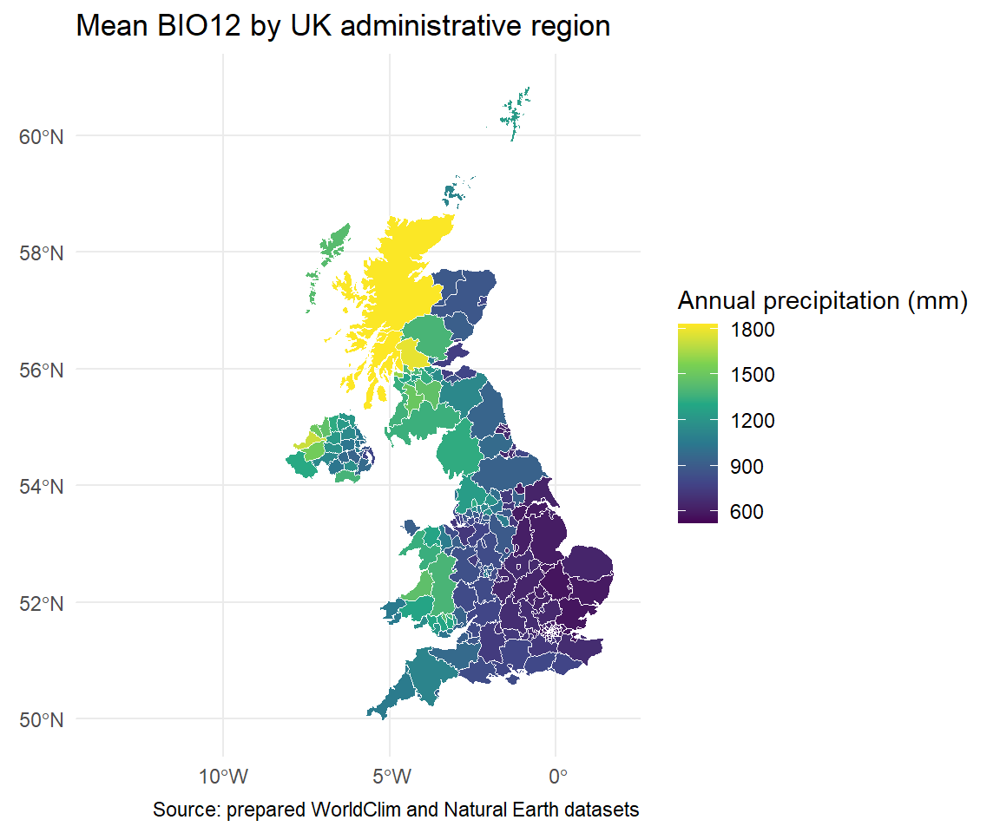

Points, lines, polygons, rasters, and environmental values
Why spatial data matter for SDMs
The natural world is spatial. Species records tell us where organisms were observed, while environmental data describe conditions at those locations. Both have spatial and temporal scales. Species distribution models (SDMs) connect these observations to environmental predictors—but only if the locations, map projections and spatial resolutions are handled appropriately.

Illustration of hypothetical predator–prey movements along an environmental gradient.
In R, two common spatial data structures are vectors (points, lines and polygons) and rasters (grids of cells with environmental values). This chapter introduces both using small examples followed by the prepared UK workshop datasets.
TipLearning outcomes
By the end of this chapter, you should be able to create and inspect spatial objects, recognise coordinate reference systems (CRSs), read environmental rasters, compare raster resolutions and extract environmental values at locations. You will also be able to explain why these steps matter for SDM analysis.
Start in your own R project
Follow the homepage instructions to download the student files and create your own RStudio project. Save your code in your own .R script (for example, 01_SDM_practical.R), and add comments explaining what each command does.
Copy and run this first example. It loads the packages used in this chapter and the prepared workshop datasets. You do not need to download data from online services.
library(terra) # Vector and raster operationslibrary(sf) # Spatial objects and geometrylibrary(ggplot2) # Plotting maps with ggplot2# Check that you are working in the workshop project folderstopifnot(file.exists("data/workshop_data.RData"))stopifnot(file.exists("data/Clim_UK.tif"))# Load the prepared boundaries and environmental rasterload("data/workshop_data.RData")Clim_UK <- terra::rast("data/Clim_UK.tif")# Confirm the expected data are availablestopifnot(inherits(UK_sf, "sf"))stopifnot(inherits(UK_admin_sf, "sf"))stopifnot(inherits(WalesEast_admin_sf, "sf"))stopifnot("bio_12"%in%names(Clim_UK))names(Clim_UK)
If a file cannot be found, return to the project folder and setup check on the homepage. Do not use setwd() to conceal an incorrect project location. The chapter’s setup is shown deliberately, so you can reproduce its later plots in your own R session.
1. Vector data: points, lines and polygons
A vector represents individual spatial features:
Points represent species observations, survey locations or weather stations.
Lines represent features such as rivers, transects or movements.
Polygons represent areas such as survey boundaries, habitats or administrative regions.
Each feature can have attributes (for example, species, observation date or habitat type). A spatial dataset therefore combines a geometry with a data table.
1.1 Create and map point locations
Let’s create six point locations from longitude and latitude. Longitude is the first coordinate; latitude is the second.
name authority code area extent
1 WGS 84 EPSG 4326 World -180, 180, -90, 90
Inspect: Which R class stores these points? How are the city names attached to the coordinates?
Change: Add one city with its longitude and latitude. Remember to update the city-name vector as well.
1.2 Coordinate reference systems (CRSs)
A coordinate reference system (CRS) describes how coordinates relate to the Earth. EPSG:4326 is a geographic CRS using longitude and latitude in degrees. Projected CRSs generally express coordinates in linear units, such as metres, and are useful for some distance- and area-based analyses.
It is essential to distinguish assigning a CRS from transforming coordinates:
# Inspect the original CRSterra::crs(city_points, describe =TRUE)
name authority code area extent
1 WGS 84 EPSG 4326 World -180, 180, -90, 90
# Transform the point coordinates to a European projected CRScity_points_europe <- terra::project(city_points, "EPSG:3035")# Compare coordinates before and after transformationhead(terra::crds(city_points))
x y
[1,] -1.2577 51.7520
[2,] 12.4964 41.9028
[3,] -3.9440 51.6214
[4,] 8.6821 50.1109
[5,] 8.5417 47.3769
[6,] 2.3522 48.8566
head(terra::crds(city_points_europe))
x y
[1,] 3547145 3242304
[2,] 4528867 2092277
[3,] 3362083 3259926
[4,] 4226726 3000691
[5,] 4210798 2697007
[6,] 3760772 2889485
Do not use terra::crs(city_points) <- "EPSG:3035" to reproject the points. This would incorrectly relabel the existing coordinates without moving them. Use terra::project() (or sf::st_transform() for sf objects). https://rspatial.github.io/terra/reference/project.html
NoteWhy choosing a CRS matters
EPSG:4326: longitude and latitude in degrees; convenient for global occurrence records.
EPSG:27700: British National Grid; often suitable for detailed UK mapping.
EPSG:3035: a European equal-area projection, useful for some regional area comparisons.
EPSG:3857: Web Mercator, common for online maps but not a suitable general-purpose equal-area system.
Always inspect the CRS before combining layers. Where possible, transform vector geometries to match a raster rather than needlessly reprojecting the raster and resampling its values.
1.3 Lines and polygons: an illustrative movement route
We will draw a hypothetical bird movement route and an illustrative polygon. These are teaching geometries, not observed tracking data or a recognised protected-area boundary.
# Illustrative route through Europe (longitude, latitude)route_coords <-matrix(c(15.0, 60.0,9.0, 56.0,5.0, 52.0,2.0, 48.0,-1.0, 44.0,0.0, 40.0), ncol =2, byrow =TRUE)# A line is an ordered series of coordinatesroute_sf <- sf::st_sf(label ="Illustrative route",geometry = sf::st_sfc( sf::st_linestring(route_coords), crs =4326 ))migration_line <- terra::vect(route_sf)# A polygon is a closed ring: last point = first pointarea_coords <-matrix(c(1.0, 48.4,1.0, 47.2,2.2, 47.2,3.0, 47.4,3.0, 48.4,1.0, 48.4), ncol =2, byrow =TRUE)area_sf <- sf::st_sf(label ="Illustrative area",geometry = sf::st_sfc( sf::st_polygon(list(area_coords)), crs =4326 ))illustrative_area <- terra::vect(area_sf)# Plot the route and area in the same coordinate systemplot(illustrative_area, col ="lightblue", border ="blue",xlim =c(-3, 17), ylim =c(38, 62),main ="Illustrative movement route and area")lines(migration_line, col ="darkgreen", lwd =2)

Inspect: How do the geometries of the line and polygon differ? What does closing the ring accomplish?
Research connection: Real tracking data may also require timestamps and analysis of movement uncertainty. A drawn route alone is not evidence of a species’ migration pathway.
TipChange and explore: Movement paths and tortuosity
Add waypoints: Create a new movement path by inserting additional points between the existing waypoints. Experiment with changing their positions to make the route more or less winding. Plot the original and modified paths together.
Sample fewer locations: Randomly remove some intermediate waypoints from the modified path, keeping the start and end points and preserving the original sequence of the remaining points. Plot the resulting routes.
Compare: How do the apparent movement patterns, total path lengths and path tortuosity change as you retain fewer or more waypoints?
Think about: How might the frequency of GPS observations influence estimates of animal movement distances and habitat use? Why could different sampling intervals lead to different ecological interpretations?
1.4 Obtaining and mapping UK administrative boundaries
Administrative boundaries provide a geographic context for ecological observations. These are examples of polygon vector data.
In R, we can obtain country and regional boundaries directly from Natural Earth using the rnaturalearth package.
We will explore two approaches:
Retrieve the original spatial data using R.
Load prepared spatial data supplied with the workshop.
Both approaches allow us to construct the same type of map. During the practical, the prepared data provide a convenient starting point, but learning how to retrieve new spatial datasets is valuable for independent research.
Option A: Obtain administrative boundaries using R
The following code demonstrates how to retrieve UK country and administrative boundaries.
library(sf)library(rnaturalearth)# Retrieve country boundariesWorld_sf <- rnaturalearth::ne_countries(scale ="medium",returnclass ="sf")# Retrieve the United Kingdom boundaryUK_sf <- rnaturalearth::ne_countries(scale ="medium",country ="United Kingdom",returnclass ="sf")# Retrieve UK administrative boundariesUK_admin_sf <- rnaturalearth::ne_states(country ="United Kingdom",returnclass ="sf")# Inspect the data structure and attributesnames(UK_admin_sf)head(sf::st_drop_geometry(UK_admin_sf))# Explore the regional classifications, if availableif ("region"%in%names(UK_admin_sf)) {unique(UK_admin_sf$region)}# Select East Wales using the regional attributeif (!"region"%in%names(UK_admin_sf)) {stop("The regional attribute is unavailable. Inspect the data or use the workshop snapshot.")}WalesEast_admin_sf <- UK_admin_sf[!is.na(UK_admin_sf$region) & UK_admin_sf$region =="East Wales",]# Check that the selection returned a polygonif (nrow(WalesEast_admin_sf) ==0) {stop("East Wales was not found. Check the boundary classification or use the supplied data.")}
returnclass = "sf" requests spatial objects compatible with the sf package.
names() and head() allow us to inspect the attributes.
Subsetting selects features matching a particular regional classification.
Important: Administrative classifications and attribute names can vary between data sources and versions. Inspect the downloaded attributes before selecting a region. The UK administrative-boundary example may require additional high-resolution Natural Earth data.
TipExplore: Choosing another region
Try selecting another administrative region using the available attributes.
Which attribute identifies the region?
How many polygons are returned?
What happens if you choose a region that does not exist?
How might differences in administrative boundaries affect ecological analyses?
Option B: Load the prepared workshop boundaries
For the core practical, the same spatial objects have been prepared and saved with the workshop datasets.
This avoids repeated downloads and ensures that everyone can continue even when online data services are unavailable.
library(sf)library(ggplot2)# Load prepared spatial dataload("data/workshop_data.RData")# Inspect the spatial objectsclass(UK_sf)
[1] "sf" "data.frame"
class(WalesEast_admin_sf)
[1] "sf" "data.frame"
# Explore their coordinate reference systemssf::st_crs(UK_sf)
Note: Options A and B are alternative starting points. If you retrieved the boundaries successfully using Option A, you can continue with those objects without reloading the prepared data.
Visualise East Wales within the United Kingdom
We can now map the UK boundary and highlight East Wales.
# Use copies to preserve the original objectsuk_map <- UK_sfeast_wales_map <- WalesEast_admin_sf# Ensure both objects use the same CRSeast_wales_map <- sf::st_transform( east_wales_map, sf::st_crs(uk_map))# Create the mapggplot() +geom_sf(data = uk_map,fill ="grey90",colour ="grey30" ) +geom_sf(data = east_wales_map,fill ="steelblue",colour ="darkblue",linewidth =0.5 ) +labs(title ="East Wales within the United Kingdom",subtitle ="(Administrative boundaries from Natural Earth)" ) +theme_minimal()

TipChange and explore
Change the map: Modify the polygon fill colours, border colours and line widths.
Explore spatial attributes: Use names() and head() to examine the associated geographic information.
Change the region: Select and plot another UK region from the administrative-boundary dataset.
Compare: What differences might arise when using administrative boundaries from another source or at a different spatial resolution?
Research connection: Administrative boundaries can define study areas, but they are not necessarily ecologically meaningful boundaries. How might the choice of study extent influence the interpretation of a species distribution model?
TipOther ways to obtain vector data
Vector data may be supplied as GeoPackage (.gpkg), GeoJSON (.geojson), or as shapefiles (a group of related files, not just .shp). For example, terra::vect("path/to/boundaries.gpkg") reads a GeoPackage. The optional Data Preparation chapter explains the boundary sources and how to obtain them independently.
2. Raster data: continuous environmental information
A raster is a regular grid. Each cell contains a value for a particular layer: temperature, elevation or precipitation may be continuous, while land-cover classes are categorical. A raster can contain multiple layers for the same grid.
A raster’s spatial properties include its extent, cell resolution, origin, CRS and its pattern of missing (NA) values. In a longitude/latitude CRS, resolution is expressed in degrees rather than metres. A finer cell size does not necessarily mean the source data are more accurate or ecologically appropriate.
2.1 Make a simple raster and change its resolution
plot(raster_fine, main ="Illustrative raster values")

Now aggregate neighbouring cells into a coarser grid. To compare fine and coarse data on identical cells, we also resample the aggregated layer back to the original grid. Resampling does not recreate the detail that was lost during aggregation.
Inspect: Compare the maps. Why are the values smoother in the aggregated version? Would a fine-resolution raster always be the best environmental predictor for a wide-ranging species?
2.2 Read the prepared WorldClim raster
For our UK example, the supplied Clim_UK.tif contains 19 WorldClim bioclimatic variables at 5 arc-minute resolution. They are named bio_1 through bio_19 in the prepared file. The climate values represent environmental summaries, not direct measurements at every animal observation point.
Clim_UK <- terra::rast("data/Clim_UK.tif")# Check the data, its CRS and spatial resolutionnames(Clim_UK)
The prepared climate layers are downloaded from WorldClim; you do not need to download them again for this practical. See Data Preparation for source details, temporal coverage and reproducible download code.
2.3 Transform and manipulate raster data
Here we project the precipitation raster to a new CRS. Raster transformation involves estimating cell values on a new grid and should not be repeated unnecessarily in a research workflow.
precip_UK_projected <- terra::project( precip_UK, "EPSG:27700", method ="bilinear")plot(precip_UK_projected,main ="Precipitation in British National Grid")

We can also convert units and calculate a neighbourhood mean. Notice that we keep missing values as missing rather than treating them as zero precipitation.
# Convert millimetres to centimetresprecip_cm <- precip_UK /10# A 3-by-3-cell neighbourhood mean (illustrative smoothing)precip_smoothed <- terra::focal( precip_UK, w =3, fun ="mean",na.rm =TRUE, na.policy ="omit")plot(c(precip_UK, precip_smoothed),main =c("Original BIO12 (mm)", "Smoothed BIO12 (mm)"))

Research connection: Resampling, projection and smoothing can affect the environmental values assigned to occurrence points. Before modelling, decide on a defensible spatial resolution and ensure that predictors share a consistent grid.
2.4 Summarise precipitation within administrative areas
A zonal summary calculates a statistic for each spatial polygon. Here, we estimate mean BIO12 annual precipitation for the supplied UK administrative regions. Some regions may have no valid raster cells and therefore retain NA.
# Work with a copy of the boundariesuk_zones <- sf::st_transform( UK_admin_sf, sf::st_crs(terra::crs(precip_UK)))zone_means <- terra::extract( precip_UK, terra::vect(uk_zones),fun = mean, na.rm =TRUE, ID =TRUE)# ID refers to the polygon's row position in the input SpatVectoruk_zones$mean_precip_mm <- zone_means$bio_12[match(seq_len(nrow(uk_zones)), zone_means$ID)]ggplot(uk_zones) +geom_sf(aes(fill = mean_precip_mm), colour ="white", linewidth =0.2) +scale_fill_viridis_c(name ="Annual precipitation (mm)",na.value ="grey90") +labs(title ="Mean BIO12 by UK administrative region",caption ="Source: prepared WorldClim and Natural Earth datasets") +theme_minimal()

Inspect: Why might some regions have missing values? Why should those not automatically be replaced with zero?
NoteInterpreting zonal averages
A regional average can conceal strong environmental variation within a polygon. This is relevant when combining species records collected at fine spatial scales with predictors summarised at coarser scales. The administrative boundaries in this demonstration are not necessarily ecologically appropriate modelling regions.
2.5 Extract environmental values at points
A fundamental SDM operation is associating an environmental value with an observation location. First, we sample illustrative random points, not actual bat observations. Later chapters will use genuine occurrence records.
set.seed(123)uk_vect <- terra::vect( sf::st_transform(UK_sf, sf::st_crs(terra::crs(Clim_UK))))# These are random teaching points, NOT species recordssample_points <- terra::spatSample( uk_vect, size =100, method ="random")# Extract BIO12; the first returned column is the point IDsample_precip <- terra::extract(precip_UK, sample_points)# Combine coordinates and extracted precipitationsample_results <-data.frame( terra::crds(sample_points),precip_mm = sample_precip$bio_12)head(sample_results)
# Extract all 19 bioclimatic variables for the same pointsall_bioclim_values <- terra::extract( Clim_UK, sample_points, ID =FALSE)head(all_bioclim_values)
Inspect: Do all points have a precipitation value? What might cause a missing value? Why is it important that the point coordinates and environmental raster have compatible CRSs?
Change: Use Clim_UK[["bio_1"]] to extract annual mean temperature at the same points. Examine the map and compare its spatial pattern with precipitation.
TipWhy this matters for SDMs
The next chapters use this same operation to associate measured or derived environmental conditions with species presences and background or pseudo-absence locations. Those extracted variables become candidate predictors in a statistical model. Random sample points used for illustration here must not be mistaken for species absence observations.
3. Practise, interpret and extend
NoteCore practice
Plot Clim_UK[["bio_1"]] (annual mean temperature) and Clim_UK[["bio_12"]] (annual precipitation). Which variable appears to have the stronger north–south gradient in the supplied UK data?
Change the aggregation factor in the synthetic raster example from 2 to 5. Describe what happens to spatial detail.
Compare precipitation values at several sampled points. Add a comment in your R script explaining why a point may have a missing environmental value.
Research extension
How would you choose a meaningful spatial resolution for a species that moves kilometres per day compared with one whose movements are measured in metres?
How can spatial coordinate uncertainty affect extraction of predictors at observation locations?
When would you use a projected CRS to calculate distances or areas, and why?